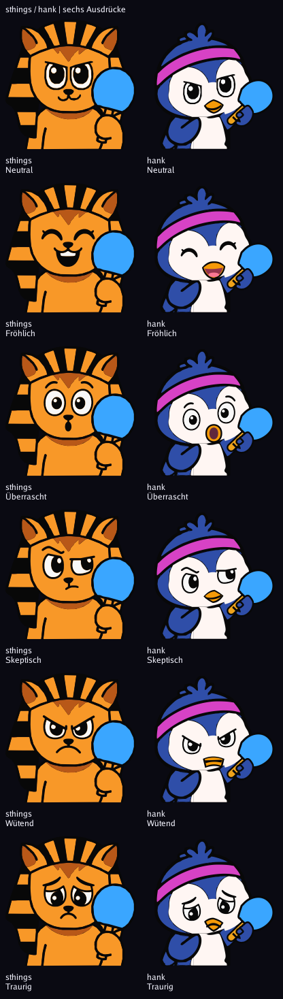
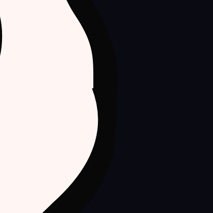
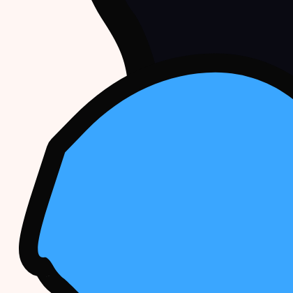

Aktueller Ausschnitt und Vordergrund-Schläger – diese Seite dokumentiert den vorherigen Stil-Schritt.
Augen und Brauen direkt aus sthings übertragen. Schläger mit klarer Wangenüberdeckung. Unterscheidbarkeit bei 64 px: 157, schwächstes Paar Skeptisch/Wütend.

Browser-Ausschnitte bei 420 px, keine Ersatzzeichnung. Der öffentliche Zufalls-Endpunkt liefert ohne Cache; zufällige Farbwahl kann zwischen den Aufnahmen abweichen.


192 px Navy · 64 px Schwarz · 28 px Schwarz · Messwerte · Alle Prüfbilder